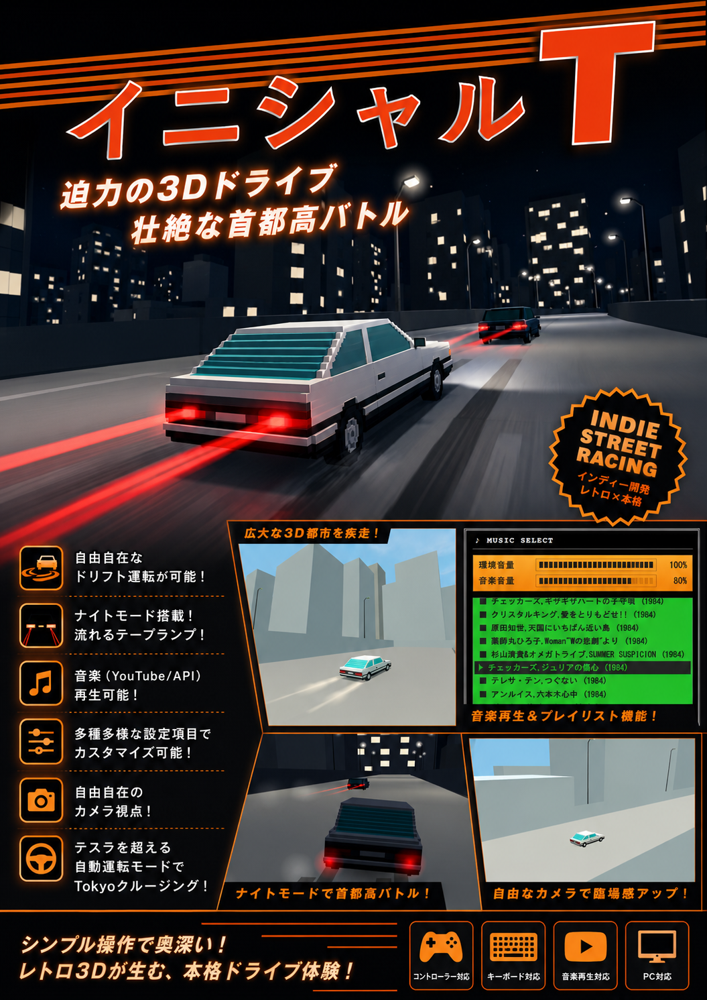

イニシャルT
SELECT CAR
イニシャルT
SELECT COURSE
PC PLAY ONLY
説明

LOADING…
Demo
何かキーを押すとスタート
0
km/h
R
N
1
2
3
4
5
DRIFT!
A
ブレーキ
S
アクセル
↑ / ↓
シフトアップ / ダウン
← / →
ハンドル
SPACE
サイドブレーキ(ドリフト)
ドラッグ
カメラ視点
ホイール
ズーム
M
音楽選択
N
夜間 ON/OFF
P
車両・街灯 ON/OFF
V
カメラ切替(後方/ボンネット/視点のみ)
F
バックミラー
Y
自動運転
G
表示の切替
J/K/L
曲を戻す/停止/送る
I/O
前の曲/次の曲
ESC
一時停止
B
音声切替(エンジン/車内/無音)